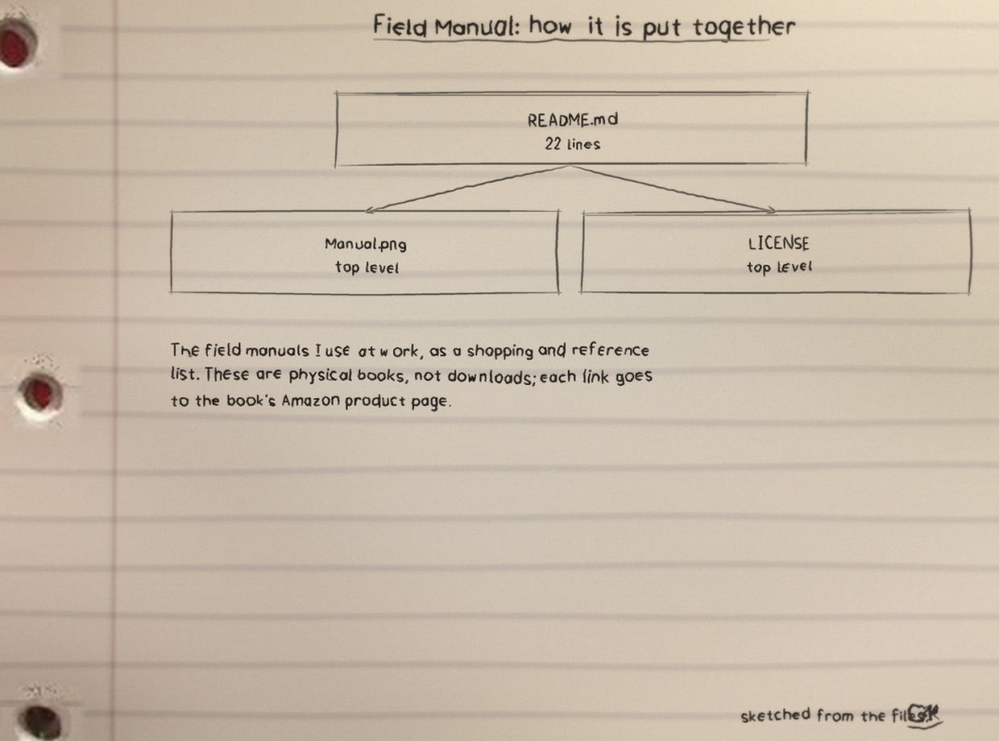
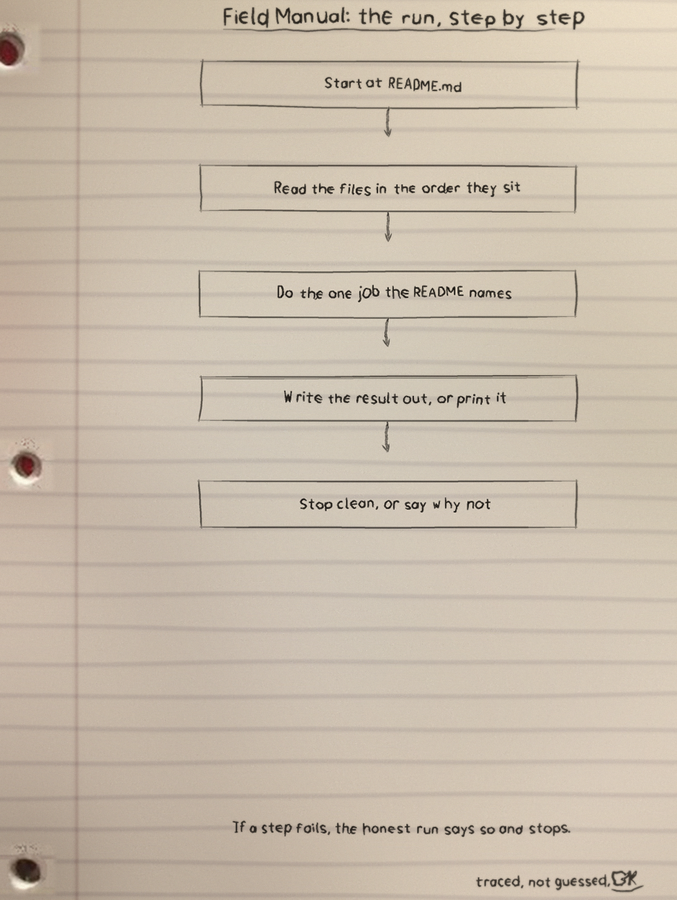
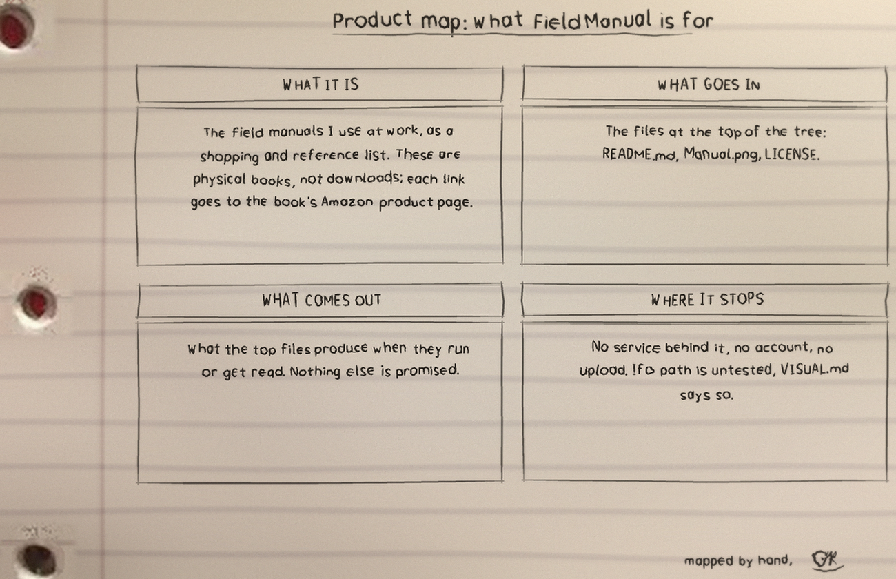

The field manuals I use at work, as a shopping and reference list. These are physical books, not downloads; each link goes to the book's Amazon product page.
What it is
Field Manual: 3 files, 22 counted lines across Markdown 22. One job, done in the open, in files you can read.
The biggest piece
README.md carries the most
lines. If the project grows, that file is where the growth
lands first, for better or worse.
The honest gap
No test files yet. That is the honest gap, and the roadmap in the visuals folder says what the first one should cover.
Run it
The repo README has the exact commands for this one. The shape is the shape for most of my projects: clone it, read the top file first so you know what will happen, then run it on something you do not mind breaking.
$ git clone https://github.com/Epsilon0xCell/Field-Manual.git
$ cd Field-Manual
The code, as it sits in the repo
From README.md, line 1 on. I did
not tidy it for the page. What you see is what the file has.
# Field-Manual
The field manuals I use at work, as a shopping and reference list. These are physical books, not downloads; each link goes to the book's Amazon product page.
## Security field manuals
- LFM: Linux Field Manual, by Tim Bryant - https://www.amazon.com/dp/1736526723
- PTFM: Purple Team Field Manual - https://www.amazon.com/dp/B08LJV1QCD
- BTFM: Blue Team Field Manual - https://www.amazon.com/dp/154101636X
- RTFM: Red Team Field Manual - https://www.amazon.com/dp/1494295504
- RTRM: Red Team Reference Manual - https://www.amazon.com/dp/B08N37KDPQ
## Desk references
- Webster's portable dictionary, Second Edition - https://www.amazon.com/dp/0764564919
- Webster's All-in-One Dictionary and Thesaurus - https://www.amazon.com/dp/1596951478
## Also on the shelf
- The ShadowSecuritySuite manual, downloaded and printed.
The files that matter
| File | Lines |
|---|---|
README.md | 22 |
Manual.png | 0 |
LICENSE | 0 |
Names doing the work: no named functions in the snapshot.
Drawn by hand
I sketch my projects on notebook paper so I have to understand them well enough to draw them. The full set, with the counts and how they were counted, is the Field-Manual-Visuals folder in the repo. Nothing is drawn over the binder holes. That is a rule, not a style.


